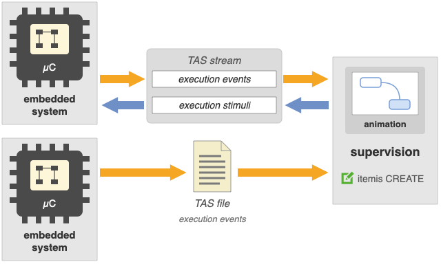
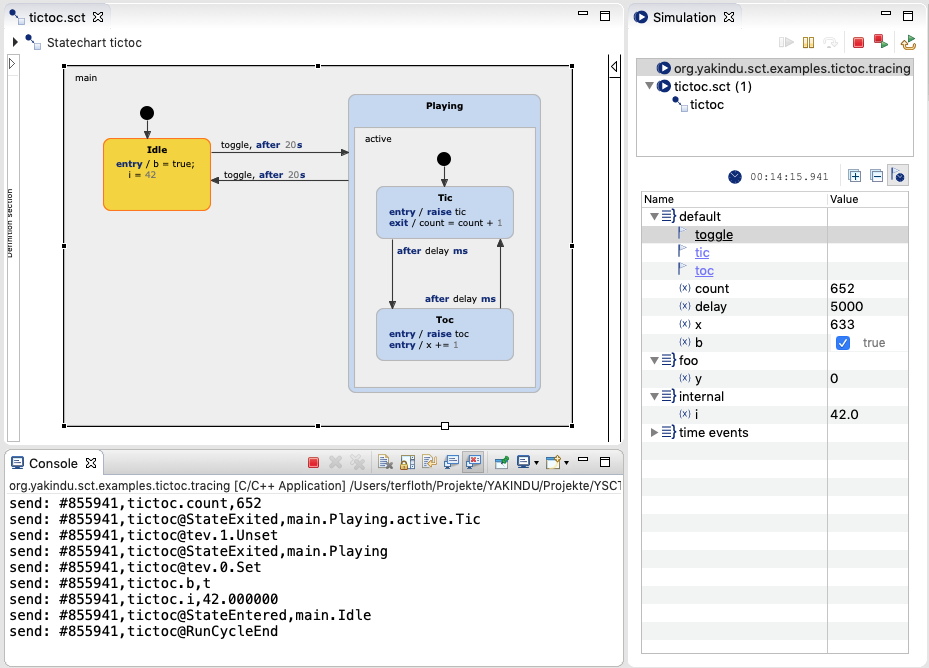
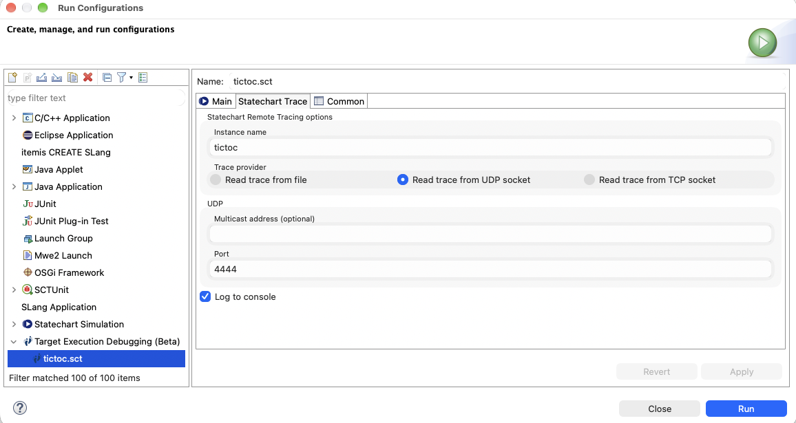

Animate and supervise a C state machine with TAS
Target Animation & Supervision (TAS) shows a state machine that runs in your application at model level: the application reports each execution step, and itemis CREATE shows the active states, the raised events and the variable values in the statechart diagram. While the application is connected, you can also raise events and change variables from the simulation view. Please refer to the TAS documentation for more information.

The Tic-Toc example application
The example state machine has two states, Idle and Playing. The input event toggle switches between them. Within Playing the state machine alternates between the states Tic and Toc and raises the out events tic and toc when entering them. The time between these state changes is defined by the variable delay.

The state machine runs within an interactive command line application, which reads commands from the standard input and writes to the standard output. It runs on the host machine. To use TAS in your own application, you can take this example as a template.
Building the application
The example project is an Eclipse CDT project; configure the compiler tool chain of your platform in the
project properties. The state machine and its TAS tracer are generated from the two generator models:
tictoc_sm.sgen enables generic tracing for the state machine, tictoc_tas.sgen generates the
TAS tracer with create::c::tas. With automatic build switched on this happens automatically,
otherwise select Generate Code Artifacts from the context menu of both files.
The trace channels are part of the example, in sc/util: tas_file_writer writes the
messages to a trace file, tas_udp_stream sends and receives them over UDP, and
tas_logger prints them to the console.
Running the application
Run the executable from Eclipse (Run As > Local C/C++ Application on the project) or from a terminal. Optionally pass the IP address and the port of itemis CREATE, by default 127.0.0.1 and 4444. You will see this output:
Sending to 127.0.0.1:4444 configure UDP socket for unicast Welcome to Tictoc! Press: >t< to toggle tictoc idle state >+< to increase tictoc delay >-< to decrease tictoc delay >l< to enable or disable log >u< to disable or enable udp tracing >h< for this help ... followed by ENTER. send: %tictoc@Enter,1 send: #0,tictoc@tev.0.Set send: #1,tictoc.b,t send: #1,tictoc.i,42.000000 send: #1,tictoc@StateEntered,main.Idle
The first block is the application's start-up output, with the commands it understands. The second block logs the TAS messages the state machine sends. Besides the console, the messages go to the UDP socket and to the file trace.tas.
Animating and supervising the state machine
Choose Run As > Target Animation & Supervision (Beta) from the context menu of tictoc.sct. The execution is shown in the regular simulation view. By default, it replays the trace file trace.tas in the root of the project.

To supervise the running application instead, open Run As > Run Configurations…, select the configuration in the category Target Animation & Supervision, and choose Read trace from UDP socket on the tab Statechart Trace, with port 4444. Start the TAS run configuration first, then start the application. While it is connected, you can raise toggle and change delay from the simulation view.
